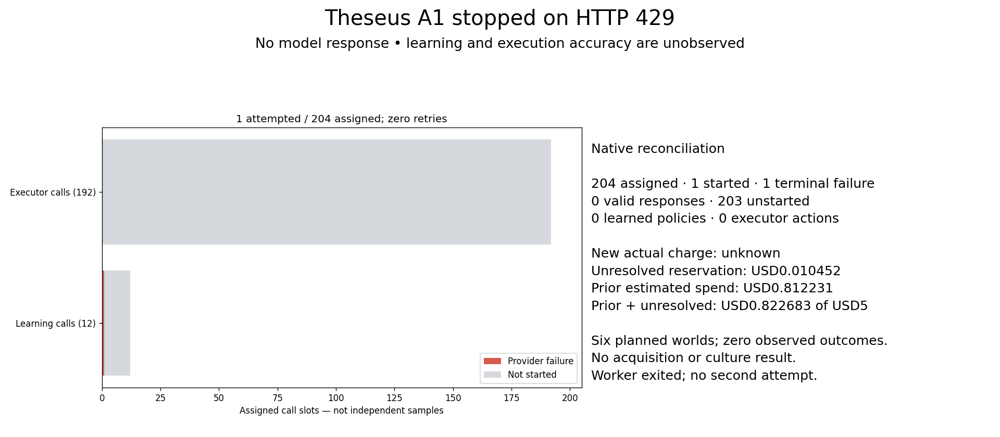

No model response. Scientific accuracy is unobserved.
Completion-order replay; this is execution progress, not cultural evolution.
| Arm | Observed terminal calls | Assigned |
|---|
Unfinished or unstarted assignments remain missing; they are never displayed as successful. Case outcomes, root denominators and invalid responses are retained in decisions.csv.

Six fixed acquisition-world roots. Twelve learners and192 execution calls are nested measurements.